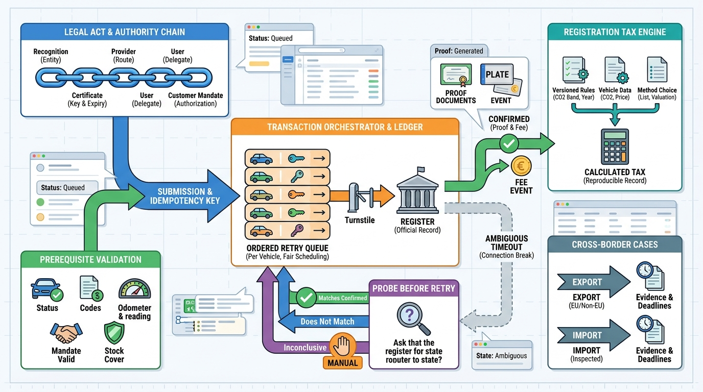

Part IV — DEALER: The Used-Car Workflow
Making It Official: Registration Transactions, Import, Export and Trade Documents

Image generated by Google Gemini (gemini-3-pro-image-preview)
Part IV — DEALER: The Used-Car Workflow

Image generated by Google Gemini (gemini-3-pro-image-preview)